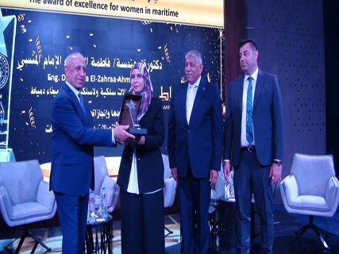

-

تقارير مجلس الادارة للشركات التابعة
تقارير مجلس الادارة للشركات التابعة عن العام المالى 2021/2022 …
-

وزير النقل بتفقد محطة تحيا مصر وسفينة وادي الملوك قبل الافتتاح الرئاسي
زار الفريق مهندس كامل الوزير وزير النقل صباح اليوم الثلاثاء، السفينة WADIALMOLOUK سفينة وادي الملوك التابعة لشركة الملاحة الوطنية إحدى شركات وزارة النقل والتي تم انضمامها لأسطول الشركة هذا العام.…
-
 ميناء دمياط يتوجه بتكريم عدد من المتميزات من الكوادر النسائية بإدارات الهيئة
تزامناً مع اليوم الدولي للمرأة في القطاع البحري ميناء دمياط يتوجه بتكريم عدد من المتميزات من الكوادر النسائية بإدارات الهيئة …